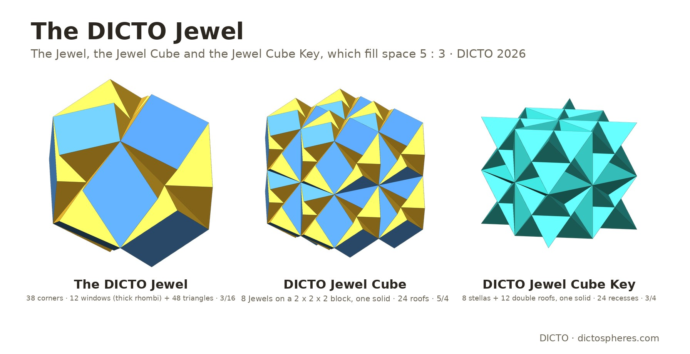
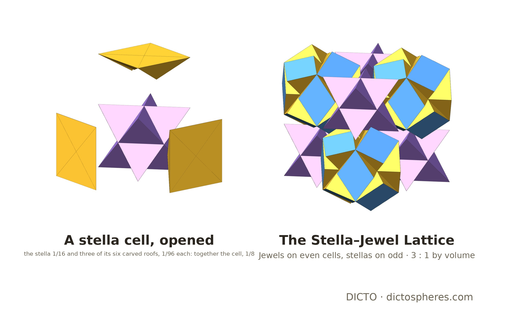
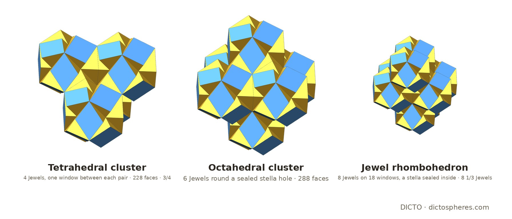
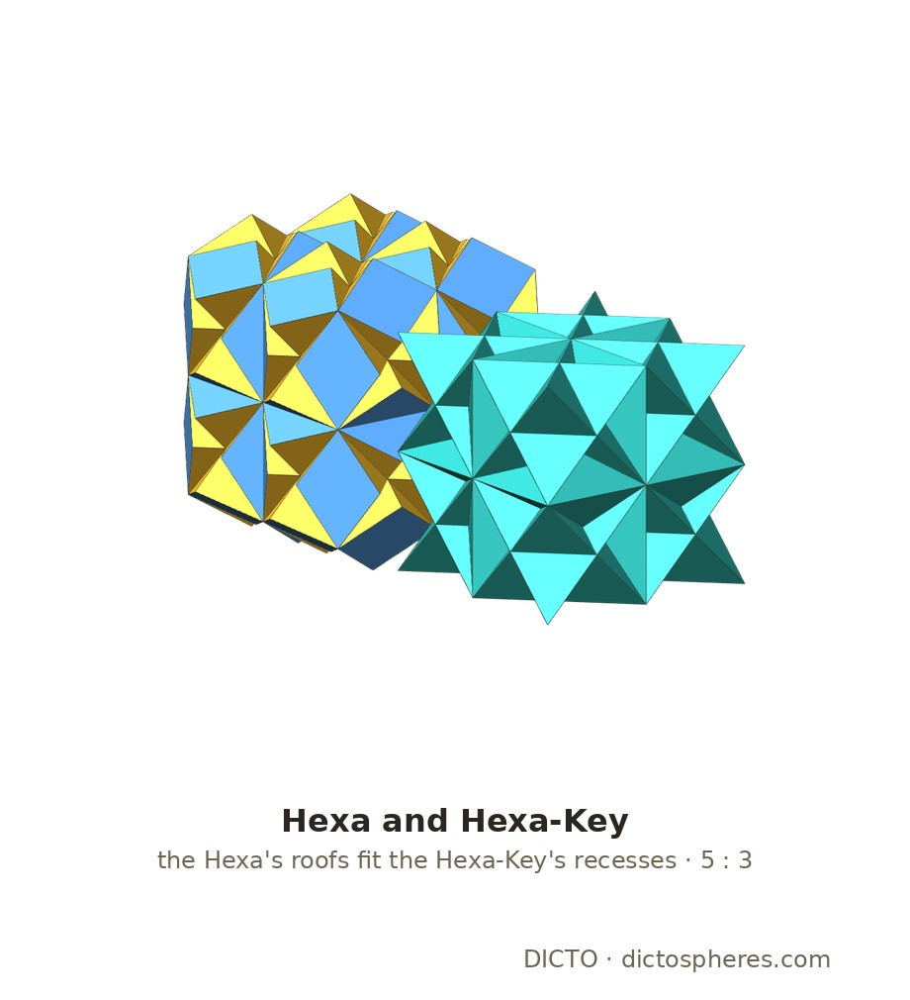

Euclid's dodecahedron carved by its neighbours' stella octangulas: an exact solid with twelve Penrose windows, its lattice, the DICTO Jewel-Tetra, Jewel-Octa and Jewel-Rhombi and how they fill space, and the DICTO Hexa and Hexa-Key, all exact

Frame. As in the EKP cell [1] and [2]: cells are cubes centred on a cubic lattice; a cell is even or odd by the parity of its index sum, and the even cells form a face-centred cubic lattice. All values below are at the scale where the Hexa's cube (§4) has edge 1, so a cell has edge 1/2 and volume 1/8; the scripts use cells of edge 2, where every volume is 64 times larger.
Construction. Euclid builds the regular dodecahedron on a cube by setting a roof on each face [3]: the hull of the face and a ridge of length 1/φ times the cell edge, at height (φ − 1)/2 times the cell edge; each roof is (1 + √5)/192 and the dodecahedron (5 + √5)/32. Each roof reaches into the next cell, where the stella octangula (Kepler's two tetrahedra on the cube's corners [4], volume 1/16) takes away (√5 − 1)/192 of it, leaving a carved roof of exactly 1/96. The Jewel is its cell and its six carved roofs: 1/8 + 6/96 = 3/16.
Its surface. Each carved roof is exactly four tetrahedra, one over each quarter of the cube face, meeting at the face centre: each has half a window on its outside and two walls in the planes of the neighbouring stella (proved exactly: the four lie in the roof, miss the stella, meet only in faces and add up to 1/96). So the Jewel has 38 corners: the cube's 8, the 12 ridge points, the 6 face centres (where it is dimpled), and 12 points that complete the windows. Its 60 faces are 12 windows, one across each cube edge, lying in the dodecahedron's face planes, and 6 × 8 = 48 triangles in the stellas' planes; 38 − 96 + 60 = 2. Each window is a thick Penrose rhombus: side (√5 − 1)/4 = 1/(2φ), long diagonal 1/2 (the cell's edge), angle 108° at the ridge corners (cos 108° = (1 − √5)/4, exact) and 72° at the cube corners [6]. The Jewel's corners are centrosymmetric, have the three-fold turns and the three coordinate mirrors, but no diagonal mirror and no four-fold turn: its symmetry group has order 24, and it is pyritohedral, like Euclid's roofed cube itself. It also has no mirror across a (111) plane (no cubic solid has), which §5 uses.
Jewels on the even cells and stella octangulas on the odd cells fill space, 3/16 : 1/16 = 3 : 1 [2]. The first check (finding #10b) sampled points; here it is exact. Take an odd cell. The six Jewels on its face-neighbours each reach into it with one carved roof (their ridges are Jewel corners). These six roofs lie in the cell, any two meet only in a face (the intersection of the uncarved roofs has volume exactly 0), and each carved part is 1/96. With the stella they give 1/16 + 6/96 = 1/8, the cell: so an odd cell is exactly its stella and six carved roofs, an even cell is the core of its Jewel, and the Jewels and stellas tile space.

Neighbours. Two Jewels on neighbouring even cells (one step along a face diagonal) share exactly one window; Jewels two cells apart along an axis share none.
The DICTO Jewel-Tetra (DICTO's tetrahedral cluster, finding #15, as one solid): four Jewels on mutually neighbouring even cells. Each pair shares one window, so its surface has (counted) 4 × 60 − 2 × 6 = 228 faces (192 triangles, 36 windows), and all four meet at one point, their cells' common corner; volume 3/4. Every set of four mutually neighbouring Jewels is of this kind, one per cell corner. Anchored on the cells whose three indices are all even, Jewel-Tetras use every Jewel exactly once, with the stellas loose between them.
The DICTO Jewel-Octa (DICTO's octahedral cluster, finding #15, as one solid): the six Jewels round an odd cell, and that cell's stella. Each Jewel shares a window with its four neighbours in the ring (12 windows); inside, the 48 walls of the Jewels' carved roofs enclose a stella-shaped hole, sealed but for its eight tips, and since the odd cell is exactly its stella and the six carved roofs (§2), the stella fills the hole exactly. Since Jewels meet each other only on whole windows and every Jewel triangle lies on a stella, the faces can be counted: the solid has an outer surface of 288 faces (240 triangles, 48 windows; 6 × 60 − 2 × 12 − 48) and volume 6 × 3/16 + 1/16 = 19/16. Jewel-Octas tile space together with loose stellas (stellas inside no piece) on exactly 12 lattices of translations of index 12 (a lattice of index n holds one cell in n; exact integer search over all lattices of that index), for example the one with Hermite basis (1,0,3), (0,1,5), (0,0,12) in cell units; each period holds one Jewel-Octa and five loose stellas. Up to the Jewel-Octa's own symmetry the 12 are one tiling.
The octet pattern (DICTO's octet network [10]). The Jewels' cells form a face-centred cubic lattice; its tetrahedral holes are the cell corners and its octahedral holes the odd cells, so Jewel-Tetras and Jewel-Octas sit exactly where the octet truss has its tetrahedra and octahedra. Each Jewel lies in 8 Jewel-Tetras and 6 Jewel-Octas (counted), and each of a Jewel-Octa's 8 faces (three mutually neighbouring Jewels) is completed to a Jewel-Tetra by exactly one Jewel outside. It is not an octet tiling: neighbouring Jewel-Tetras and Jewel-Octas share Jewels, and what fills space is still the Jewels and the stellas. Without overlap it cannot be one either: each Jewel-Octa takes six Jewels and one stella, and there are as many Jewels as stellas, so at most one stella in six can be inside a Jewel-Octa; the 12 lattices above reach that bound, leaving five stellas in six loose.
The DICTO Jewel-Rhombi (the rhombohedral cluster of [2], as one solid): eight Jewels on the corners of the face-centred cubic cell, which is the Jewel-Octa with the two Jewels at the ends of its long diagonal. Its faces have 60° angles, so the Jewels meet not only along its 12 edges but also along the 6 short face diagonals: 18 windows. All six face-neighbours of the odd cell at its centre are among its corners, so that cell's stella is sealed inside and fills the hole exactly, as in the Jewel-Octa. Counted in the same way, as one solid it has 396 faces (336 triangles, 60 windows; 8 × 60 − 2 × 18 − 48) and volume 8 × 3/16 + 1/16 = 25/16, 8⅓ Jewels.
How they fill space. The fillers are always the Jewels and the stellas; the pieces are ways of grouping them. In the Stella–Jewel Lattice there are as many stellas as Jewels, and Jewels are only three quarters of space, so no pieces made of Jewels alone can fill it: the stellas have to come too. Each of the three pieces fills space with copies of itself and loose stellas (stellas not inside any piece) on a lattice, and we found every such lattice of translations (exact integer search over all lattices of the right index; a period holds as many stellas as Jewels, so the index is twice the Jewels per piece). Many are the same tiling turned; the last column counts them up to the piece's own symmetry:
| piece | Jewels | stella inside | loose stellas per piece | lattices | up to symmetry |
|---|---|---|---|---|---|
| Jewel-Tetra | 4 | 0 | 4 | 4 (index 8) | 2 |
| Jewel-Octa | 6 | 1 | 5 | 12 (index 12) | 1 |
| Jewel-Rhombi | 8 | 1 | 7 | 25 (index 16) | 9 |
The Jewel-Octa takes in the most stellas, one for every six Jewels, which is the bound of the octet pattern above. Grouped with sharing instead, the pieces make networks: Jewel-Tetras sharing single Jewels corner to corner form a pyrochlore network (DICTO's Kagome network, finding #16 [10]; corner-sharing tetrahedra are the classical pyrochlore lattice), and Jewel-Tetras with Jewel-Octas form the octet pattern.

DICTO's Hexa and Hexa-Key, their 5 : 3 filling and their 24 windows are published in [12], where the volumes and windows were checked numerically; here they are proved exactly.
The Hexa. Put a whole Jewel on each of the eight cells of a 2 × 2 × 2 block, on the even and the odd cells alike. Inside the block they overlap; outside it, each of the 24 outer cell faces carries its Jewel's roof. As one solid, the DICTO Hexa is the block (edge 1) with 24 carved roofs on its faces: 1 + 24/96 = 5/4, six and two-thirds Jewels.
The Hexa-Key. Put Hexas on alternate blocks, rock-salt fashion (the blocks of even index sum). Each other block is then entered by 24 roofs, four through each face, from its six neighbouring Hexas; what is left is one solid, the DICTO Hexa-Key: 1 − 24/96 = 3/4, the volume of four Jewels. It is eight stella octangulas, one per cell, joined by twelve double roofs across the inner cell faces: 8/16 + 12 × 2/96 = 3/4. Its 24 recesses are exactly the Hexas' 24 roofs, so Hexas and Hexa-Keys fill space, 5 : 3.
The same pattern one level up [12]. A cell with six carved roofs added is a Jewel (1/8 + 6/96), with six taken away a stella (1/8 − 6/96); a block with 24 carved roofs added is a Hexa, with 24 taken away a Hexa-Key; and both levels sit in the rock-salt pattern [7].
Windows. The Hexas sit on a face-centred cubic lattice of blocks. Each Hexa meets each of its 12 neighbours on exactly two whole windows (24 in all, exact), and no two Hexas' roofs overlap. The Hexa is a union of overlapping Jewels, which is why it is defined as one solid.

By the twin rule [5], a centrosymmetric solid with a three-fold axis has as its mirror image in a plane at right angles to that axis the same solid turned 60°. The Jewel is such a solid, so as a solid it twins like the DICTO Ogdoecontahedron. Its packing does not twin by a (111) mirror: in [8] such a twin through a (111) layer of the Stella–Jewel Lattice left about 4% of sampled points uncovered and 4% covered twice (float). The reason is exact and simple: the mirror in a (111) plane takes the cubic lattice of cells to a different lattice (the step to the next cell, (1, 0, 0) in cell units, goes to (1/3, −2/3, −2/3)), so the mirrored packing cannot continue the cubic cells across the plane. The Ogdoecontahedron's packing twins because its cells, octahedra, are mirrored into the next octahedra of the gyrated octet; the Jewel's cells are cubes, and a mirrored cube does not continue the cubic lattice.
In the sources checked (the full text of the 80 library sources listed in the appendix, and web searches on 20 October 2026) we did not find the Jewel, its clusters, the Hexa or the Hexa-Key outside DICTO's own records [2, 10, 12].
Exact (ℚ(√5)): jewel_exact.py (roof, Jewel and its four-tetrahedron roofs, symmetry, Stella–Jewel tiling, Hexa and Hexa-Key, windows between Hexas, the (111) mirror; log jewel-exact.log, 21 PASS) and cluster_exact.py (Jewel-Tetra, Jewel-Octa and Jewel-Rhombi, their lattice tilings and classes up to symmetry, the octet pattern and its bound; log cluster-exact.log, 24 PASS); both run with the exact tools of [11] (python3 <script> studies/2026-10-18-ocd-octet/scripts). Float: lalvani_edges.py (python3 lalvani_edges.py studies/2026-10-19-og-gyrated-octet, which holds jewel_twin.py); the face counts 228, 288 and 396 are counted from the exact shared windows and stellas. Figures: jewel_figs.py (float copies of the exact pieces), shots.mjs (2× pixel ratio), jewel_compose.py.
The full text of the 80 sources below in DICTO's reference library was searched on 20 October 2026 for: Penrose, stella octangula, rock salt, Lalvani, Euclid, roof and rhombic. None contains the results of this paper. The relevant hits are Euclid and Kepler [3, 4], Pacioli, Messer's stellations of the rhombic triacontahedron (the stella octangula), Lalvani's NASA report on octahedral–tetrahedral trusses, and the papers on Penrose tilings (Kramer, Baake and Grimm, Dietl and Eschenburg). Thirteen further items are page images without a text layer (the patents of Fuller, Snelson, Pearce, Baer, Hogan, Bergman and Lalvani, among them US 4,723,382, read separately in full on 8 October 2026, and Fedorov 1885).
Web searches (20 October 2026): a dodecahedron carved by stella octangulas; space-filling pairs of a dodecahedron-based solid and the stella octangula; cubes of overlapping dodecahedra.
| Author(s) | Year | Title |
|---|---|---|
| Luca Pacioli, Leonardo da Vinci (ill.) | 1509 | Divina proportione |
| Albrecht Dürer | 1525 | Underweysung der Messung mit dem Zirckel und Richtscheyt |
| Wenzel Jamnitzer, Jost Amman (engr.) | 1568 | Perspectiva corporum regularium |
| Johannes Kepler | 1596 | Prodromus dissertationum cosmographicarum continens Mysterium cosmographicum |
| Johannes Kepler | 1619 | Harmonices mundi libri V |
| Euclid, T. L. Heath (tr.) | 1908 | The Thirteen Books of Euclid's Elements, Vol. III (Books X-XIII) |
| M. Goldberg | 1937 | A class of multi-symmetric polyhedra |
| Haresh Lalvani | 1990 | Transformational part-count in layered octahedral-tetrahedral truss configurations (NASA TM-102635) |
| P. W. Messer | 1995 | Stellations of the rhombic triacontahedron and beyond |
| M. Baake, F. Gähler | 1998 | Symmetry structure of the Elser-Sloane quasicrystal |
| T. C. Hales | 1998 | An overview of the Kepler conjecture |
| M. Baake | 1999 | A guide to mathematical quasicrystals |
| O. Ogievetsky, Z. Papadopolos | 1999 | On Quasiperiodic Space Tilings, Inflation and Dehn Invariants |
| U. Betke, M. Henk | 1999 | Densest lattice packings of 3-polytopes |
| Z. Papadopolos, O. Ogievetsky | 1999 | On Inflation Rules for Mosseri-Sadoc Tilings |
| Z. Papadopolos, O. Ogievetsky | 1999 | On quasiperiodic space tilings, inflation and Dehn invariants |
| R. V. Moody | 2000 | Model sets: a survey |
| M. Senechal | 2004 | Donald and the golden rhombohedra |
| S. Kabai | 2007 | 54-Faced Space-Filling Polyhedron (Wolfram Demonstration; description and screenshot) |
| S. Kabai | 2007 | Golden Octet Truss (Wolfram Demonstration; description and screenshot) |
| Wikipedia contributors (2007 mirror) | 2007 | Kyushindo (2007 version) |
| S. Kabai | 2008 | A Rhombic Dodecahedron Made of Rhombic Triacontahedra (Wolfram Demonstration; description and screenshot) |
| S. Kabai | 2008 | Relating a Rhombic Triacontahedron and a Rhombic Dodecahedron (Wolfram Demonstration; description and screenshot) |
| M. Koca, M. Al-Ajmi, N. O. Koca | 2009 | Grand antiprism and quaternions |
| M. Koca, M. Al-Ajmi, N. O. Koca | 2009 | Quaternionic representation of snub 24-cell and its dual polytope derived from E8 root system |
| S. Torquato, Y. Jiao | 2009 | Dense packings of polyhedra: Platonic and Archimedean solids |
| B. Grünbaum | 2010 | The Bilinski dodecahedron, and assorted parallelohedra, zonohedra, monohedra, isozonohedra and otherhedra |
| P. Kramer | 2010 | Gateways towards quasicrystals |
| A. M. Cutler, E. Schulte | 2011 | Regular polyhedra of index two, I |
| D. Frettlöh | 2011 | Icosahedral tilings in R3: the ABCK tilings (draft chapter) |
| J. Koskinen | 2011 | Unusual tilings and transformations |
| J. de Graaf, R. van Roij, M. Dijkstra | 2011 | Dense regular packings of irregular non-convex particles |
| M. Koca, N. O. Koca, M. Al-Ajmi | 2011 | Branching of the W(H4) polytopes and their dual polytopes under the Coxeter groups W(A4) and W(H3) represented by quaternions |
| M. Koca, N. O. Koca, M. Al-Barwani | 2011 | Snub 24-cell derived from the Coxeter-Weyl group W(D4) |
| T. Etzion | 2011 | Product constructions for perfect Lee codes |
| A. Garber, A. Gavrilyuk, A. Magazinov | 2012 | The Voronoi conjecture for parallelohedra with simply connected delta-surface |
| J. C. Lagarias, C. Zong | 2012 | Mysteries in packing regular tetrahedra |
| M. Baake, U. Grimm | 2012 | Mathematical diffraction of aperiodic structures |
| M. Koca, N. O. Koca, R. Koc | 2012 | Affine Coxeter group Wa(A4), quaternions, and decagonal quasicrystals |
| P. F. Damasceno, M. Engel, S. C. Glotzer | 2012 | Crystalline assemblies and densest packings of a family of truncated tetrahedra and the role of directional entropic forces |
| R. Gabbrielli, Y. Jiao, S. Torquato | 2012 | Families of tessellations of space by elementary polyhedra via retessellations of face-centered-cubic and related tilings |
| S. Torquato, Y. Jiao | 2012 | Organizing principles for dense packings of nonspherical hard particles: not all shapes are created equal |
| M. Kléman | 2013 | Defects in quasicrystals, revisited: I-flips, approximants, phason defects |
| N. Fujita, H. Takano, A. Yamamoto, A.-P. Tsai | 2013 | Cluster packing geometry for Al-based F-type icosahedral alloys |
| P.-P. Dechant, J. Wardman, T. Keef, R. Twarock | 2014 | Viruses and fullerenes: symmetry as a common thread? |
| A. Campello, G. C. Jorge, J. E. Strapasson, S. I. R. Costa | 2015 | Perfect codes in the lp metric |
| K. Deguchi, M. Nakayama, S. Matsukawa, K. Imura et al. | 2015 | Crystal structure of superconducting 1/1 cubic Au-Ge-Yb approximant with Tsai-type cluster |
| M. Baake, D. Damanik, U. Grimm | 2015 | What is aperiodic order? |
| M. Firsching | 2015 | Computing maximal copies of polytopes contained in a polytope |
| N. O. Koca, M. Koca, A. Al-Mukhaini, A. Al-Qanobi | 2015 | Quaternionic representations of the pyritohedral group, related polyhedra and lattices |
| R. Twarock, M. Valiunas, E. Zappa | 2015 | Orbits of crystallographic embedding of non-crystallographic groups and applications to virology |
| S. Kabai | 2015 | Cluster of 14 Rhombic Triacontahedra (Wolfram Demonstration; description and screenshot) |
| A. T. Cadotte, J. Dshemuchadse, P. F. Damasceno, R. S. Newman, S. C. Glotzer | 2016 | Self-assembly of a space-tessellating structure in the binary system of hard tetrahedra and octahedra |
| C. Hann, J. E. S. Socolar, P. J. Steinhardt | 2016 | Local growth of icosahedral quasicrystalline tilings |
| R. M. K. Dietl, J.-H. Eschenburg | 2016 | The icosahedral quasiperiodic tiling and its self-similarity |
| A. Stergiou | 2018 | Bootstrapping hypercubic and hypertetrahedral theories in three dimensions |
| A. Garber | 2019 | Voronoi conjecture for five-dimensional parallelohedra |
| D. Poland, S. Rychkov, A. Vichi | 2019 | The conformal bootstrap: theory, numerical techniques, and applications |
| R. Twarock, A. Luque | 2019 | Structural puzzles in virology solved with an overarching icosahedral design principle |
| T. Ishimasa | 2019 | Icosahedral quasicrystal, 1/1 and 2/1 approximants in Zn-based ternary alloys containing Au and Yb/Tb |
| A. Al-Siyabi, N. O. Koca, M. Koca | 2020 | Icosahedral polyhedra from D6 lattice and Danzer's ABCK tiling |
| M. Koca, R. Koc, N. O. Koca, A. Al-Siyabi | 2020 | Icosahedral tiling with dodecahedral structures |
| N. O. Koca, R. Koc, M. Koca, A. Al-Siyabi | 2020 | Dodecahedral Structures with Mosseri-Sadoc Tiles |
| V. R. Krishnamurthy, E. Akleman, S. G. Subramanian et al. | 2020 | Bi-axial woven tiles: interlocking space-filling shapes based on symmetries of bi-axial weaving patterns |
| V. R. Krishnamurthy, E. Akleman, S. G. Subramanian, M. Ebert, J. Cui, C. Fu, C. Starrett | 2022 | Geometrically interlocking space-filling tiling based on fabric weaves |
| B.-X. Lao, S. Rychkov | 2023 | 3D Ising CFT and exact diagonalization on icosahedron: the power of conformal perturbation theory |
| D. Smith, J. S. Myers, C. S. Kaplan, C. Goodman-Strauss | 2023 | An aperiodic monotile |
| R. Akpanya et al. | 2024 | Topologically interlocking blocks inside the tetroctahedrille |
| I. J. Dejter, L. R. Fuentes, C. A. Araujo | 2025 | Perfect truncated-metric codes in lattice graphs and superlattice graphs |
| S. Rychkov | 2025 | Conformal bootstrap: from Polyakov to our times |
| M. Kovačević | 2026 | An isodiametric theorem and lattice diameter-perfect codes in A3 |
| R. Al Raisi, N. O. Koca, M. Koca, R. Koc | 2026 | Modified Mosseri-Sadoc tiles from D6 |
| Wikipedia contributors | 2026 | Crystal twinning (incl. the spinel law) |
| Wikipedia contributors | 2026 | Fullerene |
| Wikipedia contributors | 2026 | Goldberg polyhedron |
| Wikipedia contributors | 2026 | Kenshiro Abbe |
| Wikipedia contributors | 2026 | Kyūshindō |
| Wikipedia contributors | 2026 | Mitsusuke Harada |
| Wikipedia contributors | 2026 | n-flake (Sierpinski icosahedron) |
| Wikipedia contributors | 2026 | Tetrahedral-octahedral honeycomb (incl. the gyrated form) |